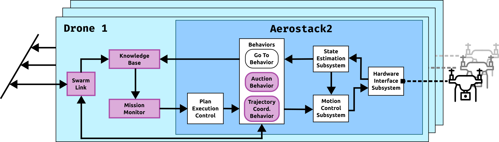

Drone inspection missions in simulation
This tutorial runs a photovoltaic panel inspection mission in the Gazebo simulation of the inspection testbed (TB2). It covers configuring the drone world, creating a mission with the built-in TUI, running it, and visualising the panels in RViz.
Requirements
Aerostack2 and the TB2 project installed (see TB2: Inspection Testbed).
tmuxinatorinstalled (gem install tmuxinatororapt install tmuxinator).All commands run from the project root (
TB2_Panel_Inspection_Simulation/).

Figure 1 Per-drone Aerostack2 node stack: Knowledge Base and Mission Monitor (collective awareness, pink) alongside the core motion behaviors and hardware interface.
Configure the world
The world YAML defines the GPS origin and the initial position of each drone in the simulation. The launcher reads drone namespaces directly from this file, so adding or removing a drone here is enough to change the swarm size.
The default single-drone world is config/world.yaml:
/**:
platform:
ros__parameters:
gps_origin:
latitude: 40.4405287
longitude: -3.6898277
altitude: 100.0
drone0:
platform:
ros__parameters:
vehicle_initial_pose:
x: -2.0
y: -4.0
z: 0.0
To add a second drone, append a new entry following the same pattern, then pass the file with -w:
drone1:
platform:
ros__parameters:
vehicle_initial_pose:
x: 2.0
y: -4.0
z: 0.0
Pre-built world files for 3, 4 and 5 drones are in config/ (e.g. config/world_swarm.yaml, config/world4drones_solar.yaml).
Create a mission with the TUI
The TUI is the recommended way to create mission files. Launch it from the project root:
python3 tui_experiments.py
The TUI opens on the Spec Generator screen. Use the Experiment Runner tab (Tab key) to execute batches of pre-built missions; this tutorial focuses on the generator.
Steps to create a mission:
Press Add [a] to open the spec editor form.
Fill in the basic parameters:
Run name — used as the filename prefix for the generated files.
Arena bounds — the
[x_min, x_max] × [y_min, y_max]extent of the Gazebo world in metres.Drones — count — number of drones; must match the entries in your world YAML.
Drone start X — the X coordinate where drones are placed in a line at startup.
Configure the inspection areas. Choose a layout (
grid_areasfor a regular grid,strip_areasfor horizontal bands, orcustomto draw polygons interactively). Forcustom, a matplotlib canvas opens:Left-click — add a vertex to the current polygon.
Right-click or n — close the current polygon and start a new one.
u — undo the last vertex.
Delete / Backspace — discard the current in-progress polygon.
Close window — confirm and return to the form.
Set the coverage parameters under World:
street_spacing— distance between adjacent coverage lanes (metres).wp_space— distance between waypoints along each lane (metres).height— inspection flight height (metres).speed— coverage flight speed (m/s).orientation— sweep direction in degrees (0° = along X, 90° = along Y).
Press Generate [g] to write the mission files without launching, or Generate & Run [r] to generate and immediately start the stack and mission.
The generator writes:
config/exp_config/<name>/<name>.yaml— world file with drone initial positions.missions/<name>/<name>_count<N>.yaml— mission file forNdrones.
Launch the simulation
Start the Aerostack2 stack, passing the world file that matches your drone count:
./launch_as2.bash -w config/exp_config/<name>/<name>.yaml
In a second terminal, open the ground station (RViz + monitoring):
./launch_ground_station.bash -w config/exp_config/<name>/<name>.yaml
Run the mission
Send the generated mission file to the running stack:
python3 send_mission.py missions/<name>/<name>_count<N>.yaml -s
The -s flag enables simulation time. drone0 acts as auctioneer: it plans the coverage waypoints for all areas, runs an auction with the collective awareness structure, and each drone executes the waypoints assigned to it.
Add -v for verbose output showing waypoint assignments and auction results.
View panels in RViz
When send_mission.py starts, it publishes the inspection panel meshes and the ground plane to RViz automatically. Two MarkerArray topics become active:
/solar_panels— one mesh marker per inspection panel./ground_plane— the ground surface mesh.
These are displayed automatically if the ground station RViz config includes MarkerArray displays for those topics. To add them manually in RViz, click Add → By topic → /solar_panels → MarkerArray (and repeat for /ground_plane).
To publish the panel markers standalone — for example when replaying a rosbag without a live mission — edit the mission path in publish_static_markers.py and run:
python3 publish_static_markers.py
Stop the simulation
./stop.bash